Desde 1991 representamos a los pequeños productores campesinos e indígenas de todo el territorio nacional, defendiendo sus intereses y conquistando espacios para mejorar sus condiciones económicas y sociales.
La Confederación La Voz del Campo es una entidad nacional de carácter gremial, fundada el 4 de noviembre de 1991, que agrupa a pequeños productores campesinos e indígenas en regiones, provincias, comunas y localidades de todo Chile.
Reunimos a asociaciones gremiales, cooperativas, empresas familiares y artesanos con un propósito común: defender los intereses de la Agricultura Familiar Campesina y conquistar espacios orientados a mejorar sus condiciones económicas y sociales.
Somos interlocutores del sector ante el Estado, el mundo público y la sociedad civil, llevando la voz de quienes producen el 40% de los alimentos que consume nuestro país.
Nuestra visión: ser líderes en el desarrollo integral de la agricultura familiar en Chile —incluyendo a jóvenes, mujeres e indígenas— alcanzando un estándar de modernización que armonice la eficiencia productiva con el respeto irrestricto al medioambiente.
Representamos al 92% de las explotaciones agrícolas de Chile.
Asociaciones, cooperativas y empresas familiares organizadas.
Presencia en regiones, provincias y localidades del país.
De trayectoria defendiendo al campesinado chileno.
Los ejes que ordenan la gestión de la Confederación en los territorios de los asociados.
Garantizar a nuestros asociados en sus territorios la entrega de asesoría técnica, capacitación integral y asistencia especializada.
Fortalecimiento institucional y vinculación estratégica en los territorios de los asociados.
Promover vínculos con instituciones públicas/privadas y organismos nacionales e internacionales e instituciones académicas.
Fortalecimiento y capacitación continua en nuevas tecnologías, innovación y productividad para cumplir las exigencias del mercado nacional e internacional.
Dirigentes campesinos que representan a la Agricultura Familiar en cada rincón de Chile.
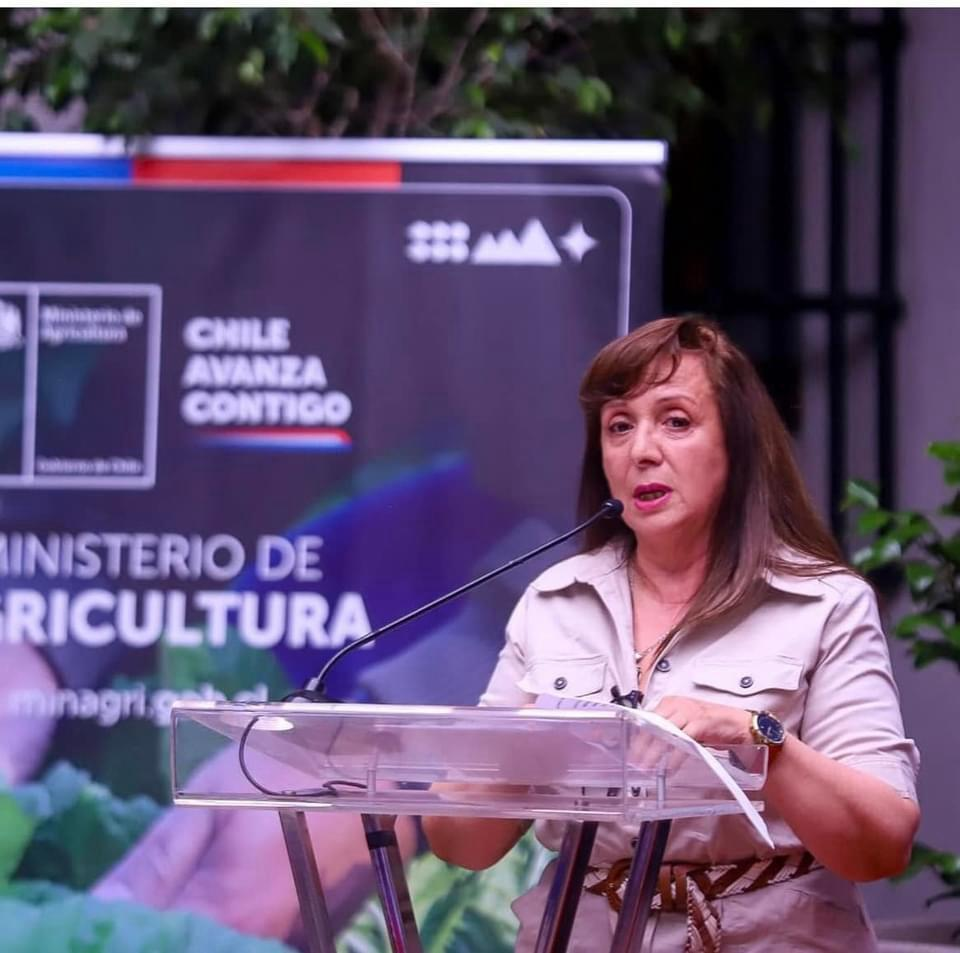
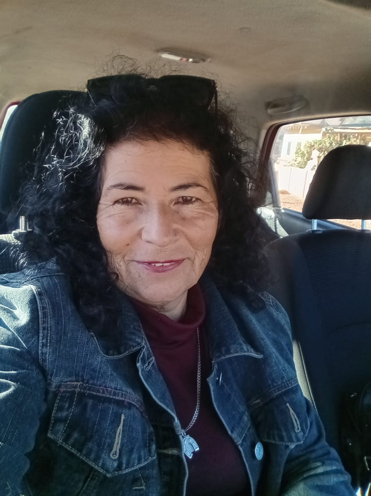
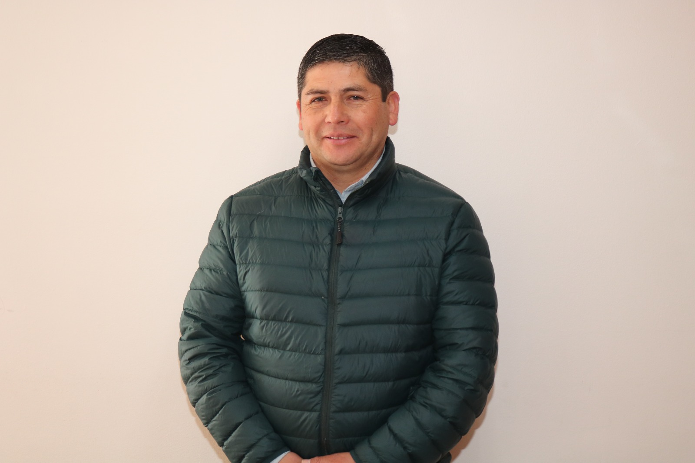
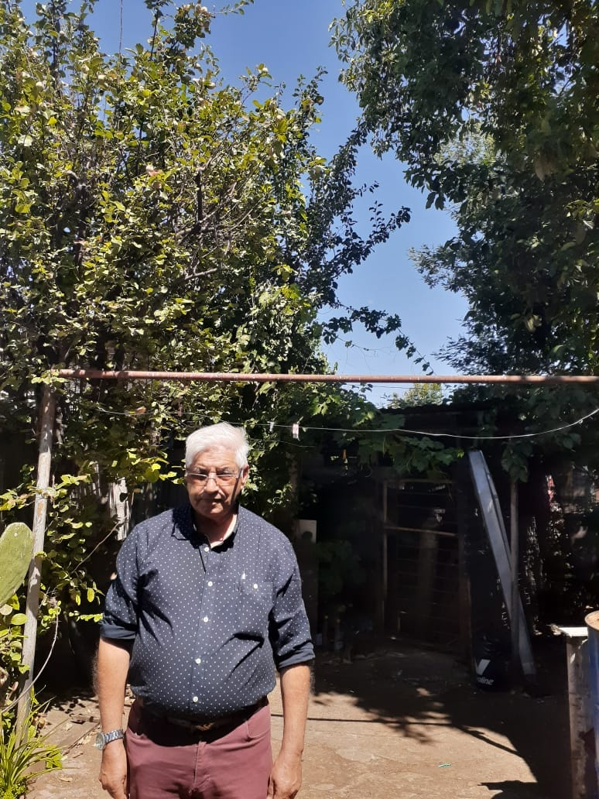
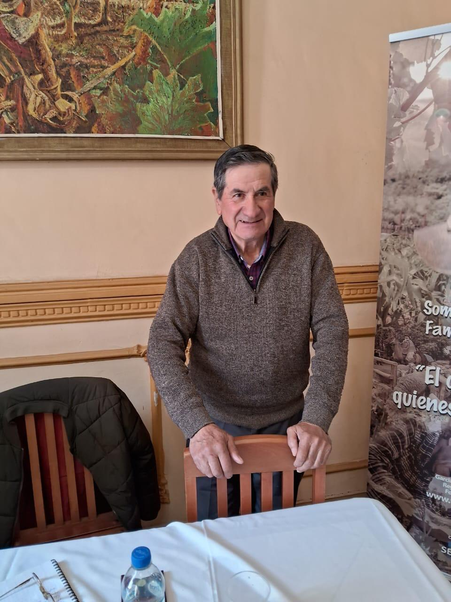
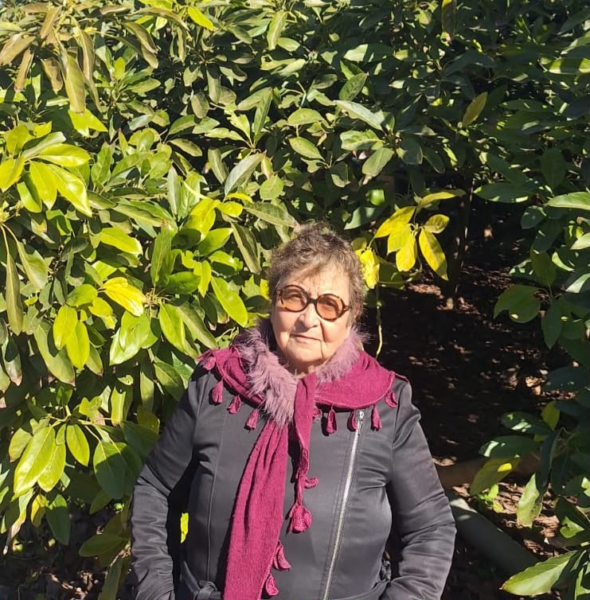
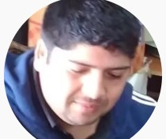
Falta la foto de María Inés Garrido Molina.
Novedades y cobertura de la actividad gremial de la Confederación.
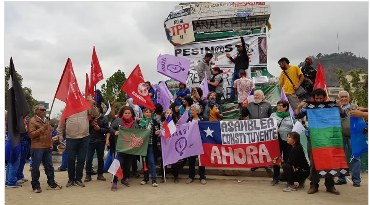
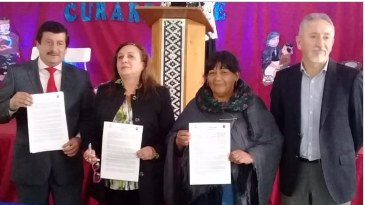
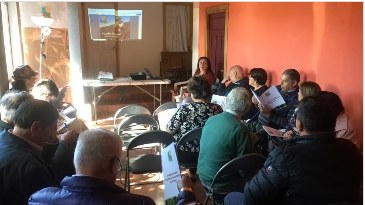
Encuentros, asambleas y actividades que reúnen a la Agricultura Familiar Campesina de todo el país.
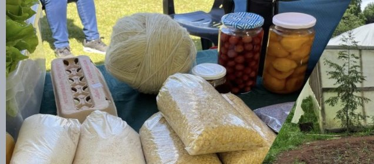
Encuentro nacional de dirigentes campesinos con foco en fortalecimiento institucional, asistencia técnica e innovación tecnológica para la Agricultura Familiar Campesina.
Descripción breve de la actividad realizada por la Confederación. Se completará con el contenido real entregado.
Descripción breve de la actividad realizada por la Confederación. Se completará con el contenido real entregado.
¿Eres productor, dirigente o representas a una organización campesina? Escríbenos y súmate a la red que representa a la Agricultura Familiar Campesina de Chile.
34 años de trabajo territorial, representando al 92% de las explotaciones agrícolas familiares y al 40% de los alimentos que produce Chile, exigían una casa propia en internet. Este es el camino que seguimos para construirla.
Nuestra dirección oficial vozdelcampo.cl: un espacio 100% propio, sin publicidad ajena ni dependencias, para presentarnos con dignidad institucional ante ministerios, INDAP y medios.
Presentación clara de la Confederación desde su fundación en 1991 y de nuestro propósito: defender a la Agricultura Familiar Campesina en todo Chile.
Incorporamos a la mesa directiva con fotografías, nombres y cargos, humanizando a la organización: detrás de La Voz del Campo hay personas reales.
Sección dedicada a las últimas actividades, encuentros y asambleas, demostrando a nivel nacional e internacional que somos una organización vigente.
Un formulario directo y datos institucionales claros, para que productores, dirigentes y organizaciones de todo Chile tengan una vía fácil para sumarse.
Arquitectura optimizada para celulares y computadores, fundamental para que nuestra voz llegue a quienes navegan mayoritariamente desde su teléfono en el territorio.